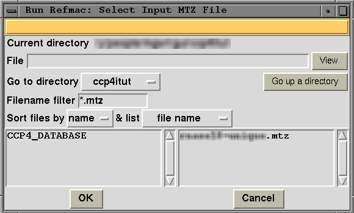

|
CCP4i: Graphical User Interface |
| File and Directory Selection |


|
File name completion applies to the input file selection lines in the task interfaces and should help you find files without using the full file selection window (as described below). If you enter only the initial letters of a file name and hit the Return/Enter key, a window will come up listing all files whose names begin with those letters. You should select one file from the list. You can also use wildcard characters ("?" for a single character or "*" for one or more characters) and hit the Return/Enter key to get a listing of all files which satisfy the search criteria.
When the Browse button is clicked, a File or Directory Selection window is opened. This window is expandable, and is laid out as follows:
The Current Directory line has a read-only label of the full path name of the current directory.
The File Entry line has an entry field in
which to type a file or
directory name. It is possible to enter an environment variable
to get to a given directory or a search string which includes
some wildcard characters ( ? for a single character and * for a sequence
of zero or any number of characters). For example: typing in the string
"*insulin*" and then pressing the <Return> key
would find files with names: insulin.mtz, my_insulin.mtz, insulin_jan10
etc. and also any directory with insulin as part of its name. The hitlist
is displayed in the File List window below.
N.B. When doing the wildcard search the Filename Filter is ignored.
A file name in the File Entry can be accepted either by pressing the <Return> key while the focus is in the File Entry field or by clicking the OK button at the bottom of the window.
Upon picking the View button (on the right hand side of the File Entry line), some header information from the currently selected file will be listed to a viewing window, which comes up separately. Note you must have one filename selected in the File Entry field for this to work.
The Go to Directory line has a pop-up menu button to enable selection of a directory from those set using the Directories&ProjectDir button near the top right of the main window. Upon selecting a different directory, the 'current directory' is automatically adapted. Also on this line is a Go up a directory button to extend the choice of directories when browsing for files.
The Filename Filter usually contains
the default file extension
but this can be changed if your files do not have a standard extension.
N.B. The file extension must be entered in the following format:
*.mtz. Entering mtz is not sufficient.
Files may be sorted by name or date and listed with just their file name or all their file details (i.e. access code, size, date and filename).
The Directory List and File List are scrollable listboxes which contain lists of all the directories immediately below the current directory (on the left) and all of the files in the current directory which are consistent with the filename filter (on the right). The exception to this is if you have just entered a search string into the file entry field, in which case only the directories and files satisfying that search string are listed. A single mouse click on a file will put that file name in the File Entry field, a double click on the file name will select the file and exit from the File Selection window. A click on a directory name will make that directory the current directory.
The OK button will return any file name in the File Entry field provided that when specifying an input file, the file does exist. If you click on the OK button when no file is selected or the name in the File Entry field is inappropriate, the File Selection window will remain until you use the Cancel button to exit.
The Cancel button will exit the File Selection and not return any file name even if one is currently selected.
|
|